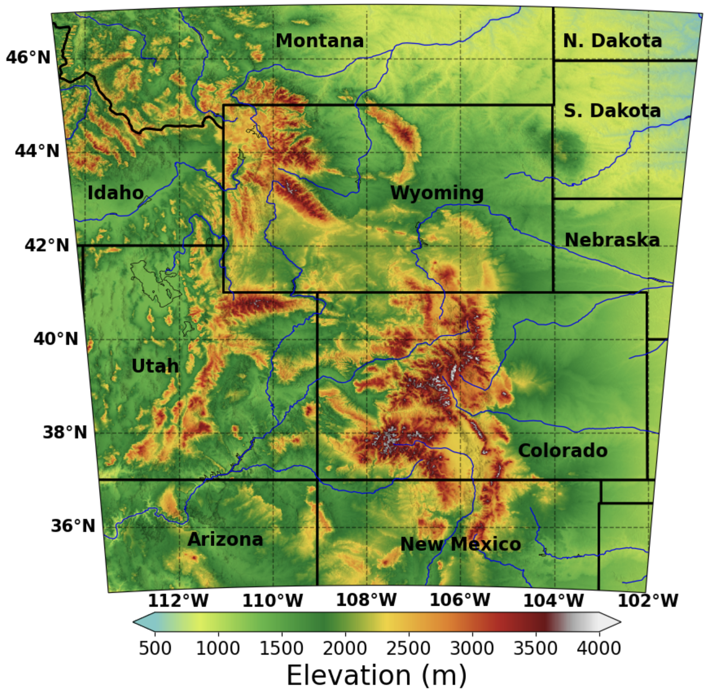

PRAMOD ADHIKARI, PhD
RESEARCH SCIENTIST | UNIVERSITY OF WYOMING
Mountain Climate,
Changing World
I study how a warming world reshapes weather and climate in mountain environments and turn high-resolution Earth System Modeling into information communities can use.
ATMOSPHERE / MOUNTAINS / WATER
ABOUT ME
I am an atmospheric scientist at the University of Wyoming, fascinated by how weather and climate interact with mountains, and how those interactions are changing in a warming world.
More about my research
My research has taken me from studying aerosol–cloud interactions over the Himalayas to exploring snow, precipitation, and extreme weather across the American West. I combine high-resolution Earth system modeling with observations and data analysis to understand these complex processes and what they mean for communities and landscapes.
Ultimately, I want my research to connect atmospheric science with real-world problems, helping turn our understanding of a changing climate into useful information for adaptation and resilience.
Core expertise Regional Earth System Modeling · WRF & WRF-Chem · High-performance Computing · Python & Climate data analysis
My background & experience ↗SELECTED WORK / RM1.3
Resolving the climate
of the Rocky Mountains
I led the development of a 70-year regional climate archive at 1.33 km resolution, from simulation design and HPC workflows to data management and evaluation.
The resulting dataset supports research on snow security, water resources, extreme weather, and AI/ML applications.
Explore the project and my contribution ↗
RESEARCH DIRECTIONS
Research areas
01 / MODELING
Regional Earth system modeling
Regional simulations, high-performance computing, and reproducible analysis workflows.
↗02 / HYDROCLIMATEClimate extremes & mountain water
Assessing precipitation extremes at global warming levels and snow security at Rocky Mountain ski areas.
↗03 / ATMOSPHERIC PROCESSESClouds & aerosols
Understanding how aerosols shape Himalayan clouds, rainfall, and freezing levels.
↗SELECTED PUBLICATIONS